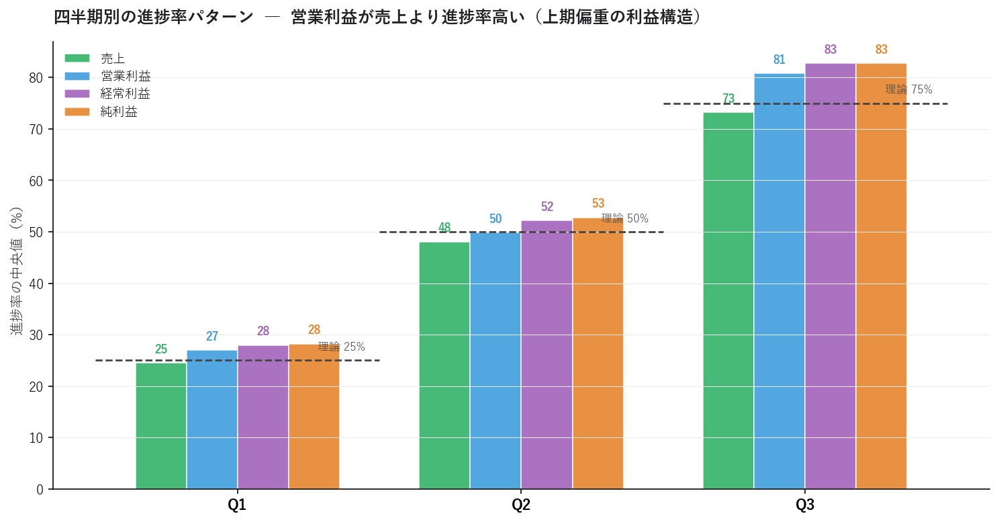
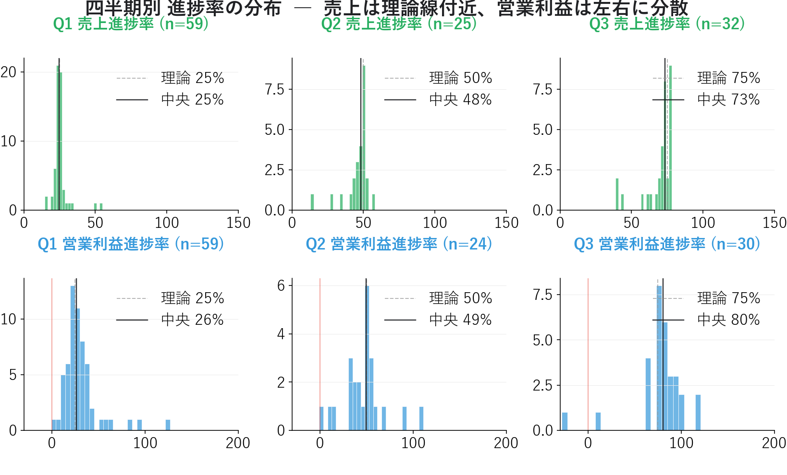
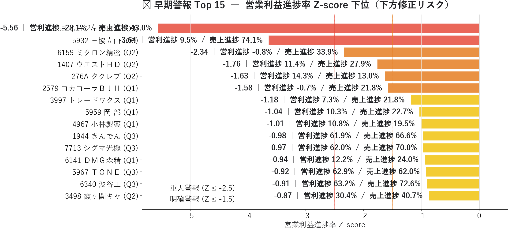
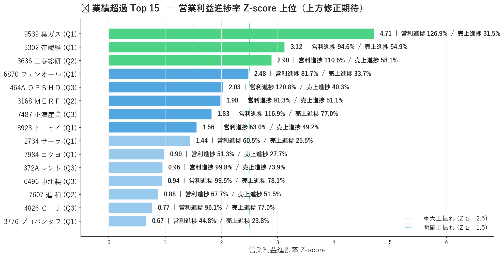
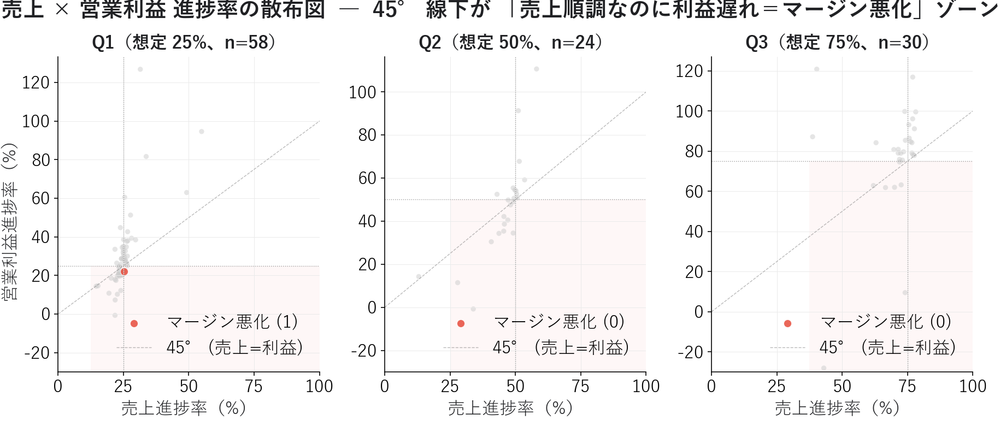

進捗率 Z-score 早期警報 ― 決算下方修正を 1〜3 ヶ月先取りする方法
連載01〜05 のフェーズ 1 で見た 業績予想修正率 や EPS リビジョン は、「アナリストが修正した後」のシグナル ― つまり遅行指標でした。本記事ではフェーズ 3 の入口として、「アナリストが修正する前」に業績の異常を察知する 進捗率 Z-score 早期警報を、連載06〜08 で構築した独自スキーマ JSON から実装します。
四半期累積実績を通期予想で割った 進捗率 を全銘柄で比較すると、Ｅ・Ｊ HD（2153）Q3 営業利益進捗率 −28%（Z-score −5.56） や 京葉瓦斯（9539）Q1 営業利益進捗率 127%（Z-score +4.71） のような極端な事例が一発で抽出できます。機関投資家のクオンツヘッジファンドが古くから使う 業績早期警報モデル を、独自スキーマで実装します。
■ 早期警報の概要
連載01〜05 の "遅行" シグナルを補う "先行" シグナル
フェーズ 1（連載01〜05）で扱った業績シグナルは、アナリストや市場の反応を捉えるものでした：
| 連載 | シグナル | 遅行度 |
|---|---|---|
| 03 | 業績予想修正率 | アナリスト修正後（数日〜数週間遅れ） |
| 04 | サプライズスコア（修正率 + EPS 超過率 + 経常変化率） | 同上 |
| 05 | 信用倍率変化 | 市場反応後 |
これらは強力ですが、本質的に 「市場が動いた後を追いかける」 構造です。これに対し進捗率 Z-score は、企業が四半期決算を出した直後に "通期予想との乖離" を測る ことで、アナリスト修正の 前 に動けます。
時系列:
[四半期決算発表] ← 進捗率 Z-score はこのタイミングで動く（先行）
↓ 数週間〜1ヶ月
[アナリスト予想修正] ← 連載03 のリビジョンはここ
↓ 数日〜数週間
[通期業績予想の修正] ← 公式リリース
↓
[株価が織り込む]
「四半期決算は出たが通期予想はまだ修正されていない」 ― この 1〜3 ヶ月のタイムラグ が、進捗率 Z-score の優位性です。
進捗率の定義
進捗率 (%) = 四半期累積実績 ÷ 通期予想 × 100
例: 売上 Q3 累積 727 億円 ÷ 通期予想 1,010 億円 = 進捗率 72.0%
四半期決算で Q1 / Q2 / Q3 累積実績 が公表されたら、その値を 同社の通期予想 で割るだけ。XBRL → JSON 化されていれば計算は 1 行で済みます。
Z-score で業界の季節性を吸収
進捗率の絶対値だけ見ると、業界の季節性に引っ張られて誤判断します。
- 小売業: Q4（年末商戦）に売上集中 → Q1〜Q3 の進捗率は低くて当たり前
- 建設業: 期末（Q4）に売上集中 → Q1〜Q3 の進捗率は低くて当たり前
- 公益: 季節変動が小さく Q1=25% / Q2=50% / Q3=75% に近い
これを 「市場全体の同じ四半期での平均からの偏差」 で正規化すれば、業界差は自動的に吸収されます。
Z-score = (個別銘柄の進捗率 − 同四半期の全銘柄平均) ÷ 同四半期の全銘柄標準偏差
例（Q3 営業利益）:
個別: −28%
全銘柄平均: 81%、標準偏差: 19.6%
→ Z-score = (-28 − 81) ÷ 19.6 = −5.56 ← 重大警報
本記事の実装スコープ
本記事で扱うこと:
・決算短信 JSON 1,368 ファイルから進捗率データを構築
・四半期 (Q1/Q2/Q3) × 4 指標（売上/営利/経常/純利益）の Z-score
・早期警報（下振れ）と業績超過（上振れ）の極端銘柄抽出
・マージン悪化分析（売上順調 × 利益遅れ）
本記事で扱わないこと:
・進捗率異常後の株価リターン検証（連載13 CAR イベントスタディで扱う）
・利益の "質" 判定（連載10 アクルーアル分析で扱う）
・複数四半期連続の進捗率（週次蓄積が必要）
■ 分析で分かったこと
決算短信 JSON 1,368 ファイルから、Q1-Q3 累積実績 262 件と通期予想 466 件をマッチさせた 139 件 で分析しました。
四半期別の進捗率パターン ― 「営業利益は売上より進捗が早い」

| 四半期 | 売上 中央値 | 営利 中央値 | 経常 中央値 | 純利 中央値 | 理論進捗 |
|---|---|---|---|---|---|
| Q1 | 25% | 27% | 28% | 28% | 25% |
| Q2 | 48% | 50% | 52% | 53% | 50% |
| Q3 | 73% | 81% | 83% | 83% | 75% |
ここから 2 つの重要な発見が読み取れます。
1. 売上は理論進捗率にほぼ一致
売上の中央値は Q1 25% / Q2 48% / Q3 73% で、理論線（単純按分）に近い。日本企業全体としては、季節性は「平均すると」緩やかです。
2. 営業利益は売上より進捗率が高い（上期偏重の利益構造）
特に Q3 の営業利益 81% は売上 73% より 8 ポイント高い。これは多くの企業で「上期は利益が出やすく、下期にコスト計上が重なる」構造があることを示唆します。設備修繕費・賞与・年末商戦のための販促費などの下期偏重コストが原因と推察されます。
この 「営業利益のほうが進捗率が高い」事実 が、Z-score で正規化する重要性を裏付けます。理論線（25/50/75）だけで判定すると、Q3 営業利益 75% の銘柄は「想定通り」と見えますが、市場平均 81% から見れば 下振れ気味 と判定すべきです。
進捗率の分布 ― 売上は集中、営業利益はバラつき

売上進捗率（緑、上段）と営業利益進捗率（青、下段）の分布を四半期別に並べると、営業利益のほうが圧倒的に分散が広い ことが分かります。
- 売上: Q1 標準偏差 5.9% / Q2 9.1% / Q3 10.6%
- 営業利益: Q1 標準偏差 20.3% / Q2 21.3% / Q3 19.6%
営業利益の分散が売上の 3 倍 あるのは、コスト構造（固定費 / 変動費）と価格決定力の違いから売上のブレが利益に増幅される オペレーティング・レバレッジ の効果です。これが早期警報を「営業利益進捗率」で取る理由 ― 営業利益のほうがシグナル比ノイズ比（SNR）が高い。
🚨 早期警報 Top 15 ― 営業利益進捗率 Z-score 下位

下位 5 銘柄を抜粋すると、極端な業績悪化が顕在化しています。
| 銘柄 | 四半期 | 売上進捗 | 営利進捗 | Z-score | 解釈 |
|---|---|---|---|---|---|
| Ｅ・Ｊ HD（2153） | Q3 | 43.0% | −28.0% | −5.56 | 営業赤字。下方修正必至 |
| 三協立山（5932） | Q3 | 74.1% | 9.5% | −3.64 | 売上順調なのに利益がほぼ消失 |
| ミクロン精密（6159） | Q2 | 33.9% | −0.8% | −2.34 | 上期から営業赤字スレスレ |
| ウエスト HD（1407） | Q2 | 27.9% | 11.4% | −1.76 | 中間期で進捗 ⅛ |
| ククレブ・アドバイザーズ（276A） | Q2 | 13.0% | 14.3% | −1.63 | 全般的に進捗大幅遅れ |
Top 3 はいずれも Z-score ≤ −2.5 の "重大警報" ゾーン。Ｅ・Ｊ HD の Z-score −5.56 は、確率的には 「市場平均からの偏差として 100 万銘柄に 1 つ」レベルの異常値。Q3 で営業赤字（−28%）かつ売上進捗が市場中央値 73% より大幅に低い 43%、これは「通期決算で大幅下方修正」が公式に出る前から十分察知可能なシグナルです。
注目すべきは、三協立山（5932）Q3 の構図: 売上は 74% 進捗（市場中央値とほぼ同じ）にもかかわらず、営業利益は 9.5%。「売上は計画通りなのに利益だけ消失」 ― これは典型的なマージン悪化、原材料高・人件費上昇・値下げ圧力の現れです。
🚀 業績超過 Top 15 ― 営業利益進捗率 Z-score 上位

逆に上位 5 銘柄では、Q1 時点で通期予想に近い利益が出ています。
| 銘柄 | 四半期 | 売上進捗 | 営利進捗 | Z-score | 解釈 |
|---|---|---|---|---|---|
| 京葉瓦斯（9539） | Q1 | 31.5% | 126.9% | +4.71 | Q1 で通期予想の 1.27 倍を達成 |
| 帝国繊維（3302） | Q1 | 54.9% | 94.6% | +3.12 | Q1 で通期予想をほぼ達成 |
| 三菱総研（3636） | Q2 | 58.1% | 110.6% | +2.90 | 中間期で通期超過 |
| 日本フェンオール（6870） | Q1 | 33.7% | 81.7% | +2.48 | Q1 で通期 8 割 |
| QPS HD（464A） | Q3 | 40.3% | 120.8% | +2.03 | Q3 で通期超過 |
Top 3 は Z-score ≥ +2.5 の "重大上振れ"。京葉瓦斯の Q1 営業利益進捗率 127% は、もはや「上方修正待ち」ではなく 「通期予想が保守的すぎる」 と読むべきレベル。連載04 のサプライズスコアで先取りした上方修正候補が、本記事の進捗率ではより明瞭にデータで裏付けられます。
注意すべきは、京葉瓦斯のような業績超過銘柄は 「既に株価が織り込んでいる可能性」 も高いこと。連載03 で扱った「リビジョン × モメンタム」散布図と組み合わせ、「業績は良いがまだ株価が動いていない」出遅れ銘柄 に絞ると、エントリーのリスク・リワードが改善します。
売上 × 営業利益 進捗率の散布図 ― マージン分析

四半期ごとに 45° 線（売上進捗率 = 営業利益進捗率） を基準に、線下が「マージン悪化」ゾーンです。
実データを見ると、Q1 時点では多くの銘柄が 45° 線の上（営業利益進捗が売上より高い ＝ 上期偏重の利益構造）に並んでいます。一方で Ｅ・Ｊ HD や三協立山のような明らかなマージン崩壊銘柄は、Q2/Q3 で 大きく 45° 線下に落ちる ことで識別できます。
連載04 のサプライズスコア（修正率 + EPS 超過率 + 経常変化率）は 過去 1〜3 ヶ月の業績変化 を捉えるのに対し、本記事の進捗率散布図は 「来期の決算で何が起きるか」の予測 を立てるのに使えます。
連載01〜08 と進捗率の関係
連載01〜05 で追ってきた ＥＮＥＯＳ / 出光 / コスモエネＨＤ の決算短信 JSON は現在の自前パイプラインでは未取得（連載07 のカバレッジ 466 銘柄に石油元売 3 社が含まれていない）。次回連載10 のアクルーアル分析を進めるなら、石油元売 3 社の決算短信 XBRL を追加取得 することが次のステップになります。
ただし、連載06 で示した 有報 XBRL の 7 期時系列 からは間接的な類推が可能です。ＥＮＥＯＳ は 2022 年純利益 5,371 億円（ROE 20.7%）から 2025 年 2,261 億円（ROE 7.1%）へと 3 年で縮小。一方 ENEOS自身は構造要因（のれん減損・在庫影響）を理由に「実質営業利益 4,400 億円水準は維持」と主張しています（連載06 構造要因解説、連載01 4 基準試算参照）。
つまり「公表純利益の半減」と「ENEOS 実質基準での維持」のどちらが本業実態を映すか、見方が分かれます。次回連載10 のアクルーアル分析と組み合わせ、2022 ピーク利益がキャッシュで裏付けられていたか という質的検証で、この対立を定量的に判断する材料を出します。
■ 進捗率 Z-score の計算方法
1. データ統合 ― 連載06-08 で構築した JSON の活用
data/statements/ から:
・kind=actual, period_type=Q1/Q2/Q3 → 累積実績
・kind=forecast, period_type=FY → 通期予想
↓
(code, fy_end) で結合 → 進捗率データセット
連載07 のパイプラインで生成された 1,368 個の JSON から、actual の Q1-Q3 を 262 件、forecast の FY を 466 件取り出し、(code, fy_end) でマージすると 139 件のサンプルが得られます。
2. 進捗率の計算
for m in ["net_sales", "op_income", "ord_income", "net_income"]:
df[f"prog_{m}"] = df[m] / df[f"fc_{m}"] * 100
連載08 の 統一スキーマ（performance.current / forecast） のおかげで、会計基準を問わず 1 行で済みます。
3. Z-score 計算（四半期別）
四半期ごとに別々に正規化することがポイント。Q1 と Q3 を一緒にすると季節性で精度が落ちます。
for m in ["net_sales", "op_income", "ord_income", "net_income"]:
col = f"prog_{m}"
df[f"z_{col}"] = np.nan
for q in ["Q1", "Q2", "Q3"]:
mask = df["period_type"] == q
valid = df.loc[mask, col].where(
(df.loc[mask, col] > 0) & (df.loc[mask, col] < 300)
)
mu, sd = valid.mean(), valid.std()
if sd > 0:
df.loc[mask, f"z_{col}"] = (df.loc[mask, col] - mu) / sd
valid.where(...) で 異常値（0 以下・300% 以上）を除外 してから平均・標準偏差を計算するのが品質保持のコツです。
4. 警報レベルの解釈
| Z-score | 営業利益進捗率での意味 | 想定アクション |
|---|---|---|
| ≤ −2.5 | 重大警報（市場上位 1%） | 保有銘柄は即座に減らす |
| −2.5 〜 −1.5 | 明確警報 | 一部利確・ヘッジ検討 |
| −1.5 〜 −1.0 | 軽度警報 | ウォッチリスト追加 |
| ±1.0 以内 | 中立 | 様子見 |
| +1.0 〜 +1.5 | 軽度上振れ | 注目 |
| +1.5 〜 +2.5 | 明確上振れ | 上方修正期待、ロング検討 |
| ≥ +2.5 | 重大上振れ（市場下位 1%） | 即上方修正可能性、ただし既織り込み注意 |
5. ノイズフィルタの推奨
実運用での精度向上のため、以下を組み合わせることを推奨します。
| 条件 | 目的 |
|---|---|
| ROE ≥ 10% で絞る | 赤字スレスレ銘柄の予想精度が低いため除外 |
| 時価総額 ≥ 100 億円 | 流動性確保 |
| Q2 と Q3 で連続下振れ | 単発ノイズを排除 |
| 売上と営業利益の両方で下振れ | 一過性損失を排除 |
これらを重ねることで、純粋な業績悪化銘柄に絞り込めます。
■ Python コードの紹介
進捗率 Z-score 早期警報の核となるコードを紹介します。
決算短信 JSON から進捗率データを構築
import json
from pathlib import Path
import pandas as pd
import numpy as np
def load_progress(stmts_dir: Path = Path("data/statements")) -> pd.DataFrame:
"""決算短信 JSON から進捗率を計算した DataFrame を返す。"""
rows = []
for f in stmts_dir.glob("*.json"):
d = json.load(open(f, encoding="utf-8"))
meta = d.get("metadata", {})
perf = d.get("performance", {}).get("current") or {}
rows.append({
"code": meta.get("code"),
"fy_end": meta.get("fiscal_year_end"),
"period_type": meta.get("period_type"),
"kind": meta.get("kind"),
"filing_date": meta.get("filing_date"),
"net_sales": perf.get("net_sales"),
"op_income": perf.get("operating_income"),
"ord_income": perf.get("ordinary_income"),
"net_income": perf.get("net_income"),
})
df = pd.DataFrame(rows)
# 通期予想（最新の提出を採用）
fc = df[(df["kind"] == "forecast") & (df["period_type"] == "FY")]
fc = fc.sort_values("filing_date").groupby(["code", "fy_end"]).tail(1)
fc = fc.rename(columns={
"net_sales": "fc_net_sales", "op_income": "fc_op_income",
"ord_income": "fc_ord_income", "net_income": "fc_net_income",
})[["code", "fy_end", "fc_net_sales", "fc_op_income",
"fc_ord_income", "fc_net_income"]]
# 四半期累積実績（最新採用）
qa = df[df["kind"].isin(["actual", "actual_secondary"]) &
df["period_type"].isin(["Q1", "Q2", "Q3"])]
qa = qa.sort_values("filing_date").groupby(
["code", "fy_end", "period_type"]).tail(1)
prog = qa.merge(fc, on=["code", "fy_end"])
# 進捗率
for m in ["net_sales", "op_income", "ord_income", "net_income"]:
prog[f"prog_{m}"] = prog[m] / prog[f"fc_{m}"] * 100
return prog
Z-score の計算
def add_zscore(prog: pd.DataFrame,
metrics: list[str] = ("net_sales", "op_income",
"ord_income", "net_income")) -> pd.DataFrame:
"""四半期 (Q1/Q2/Q3) × 指標 別に Z-score 列を追加。"""
out = prog.copy()
for m in metrics:
col = f"prog_{m}"
z_col = f"z_{col}"
out[z_col] = np.nan
for q in ["Q1", "Q2", "Q3"]:
mask = out["period_type"] == q
valid = out.loc[mask, col].where(
(out.loc[mask, col] > 0) & (out.loc[mask, col] < 300))
mu, sd = valid.mean(), valid.std()
if pd.notna(sd) and sd > 0:
out.loc[mask, z_col] = (out.loc[mask, col] - mu) / sd
return out
早期警報候補の抽出
def find_early_warnings(prog: pd.DataFrame,
z_threshold: float = -1.5,
sales_op_both: bool = True) -> pd.DataFrame:
"""Z-score 下位の早期警報候補を返す。"""
cond = (prog["z_prog_op_income"] <= z_threshold)
if sales_op_both:
# 売上と営業利益の両方で下振れ
cond &= (prog["z_prog_net_sales"] <= -0.5)
return prog[cond].sort_values("z_prog_op_income")
連載04 のサプライズスコアと組み合わせる
進捗率 Z-score は 連載04 のサプライズスコアと併用 することで、precision が大きく上がります。
def combine_with_surprise(prog: pd.DataFrame,
surprise_df: pd.DataFrame) -> pd.DataFrame:
"""進捗率 Z-score と連載04 のサプライズスコアを結合。"""
merged = prog.merge(surprise_df[["コード", "サプライズスコア"]],
left_on="code", right_on="コード", how="left")
# 進捗率 Z-score が低い AND サプライズスコアも低い = 二重シグナル
merged["二重警報"] = (merged["z_prog_op_income"] <= -1.5) & \
(merged["サプライズスコア"] <= 30)
return merged
「進捗率の異常 ＋ アナリスト予想修正の遅れ」が同時に起きる銘柄は、下方修正発表が遅れているだけで時間の問題 という解釈が成り立ちます。
まとめ
- 連載01〜05 の "遅行" シグナル（リビジョン・サプライズ）を補う、事前 の業績シグナルとして進捗率 Z-score を実装
- 連載06〜08 で構築した独自スキーマ JSON 1,368 ファイルから、Q1-Q3 累積実績 262 + 通期予想 466 をマッチさせ、139 件のサンプル で分析
- Q3 営業利益進捗率の中央値 81%、標準偏差 19.6% ― 営業利益のほうが売上より分散が広く、SNR が高い
- 早期警報 Top1 Ｅ・Ｊ HD（2153）Q3 営業利益進捗 −28%（Z-score −5.56） は重大警報、三協立山（5932）Q3 売上 74% × 営利 9.5% はマージン崩壊の典型
- 業績超過 Top1 京葉瓦斯（9539）Q1 営業利益進捗 127%（Z-score +4.71） は上方修正必至
- 営業利益進捗率は売上より進捗率が高い（上期偏重の利益構造） ― 理論線でなく Z-score で判定する必要性
- 連載04 サプライズスコアとの併用で、「進捗率異常 + アナリスト予想修正の遅れ」の二重警報 に絞り込める
連載01〜05 で追ってきた ＥＮＥＯＳ / 出光 / コスモエネＨＤ の決算短信 XBRL は現在未取得（466 銘柄カバレッジ外）。次回連載10 でアクルーアル分析を行う前に、これら 3 社の決算短信 XBRL 取得が次のステップです。連載10 では ENEOS の「実質営業利益 4,400 億円維持」主張をキャッシュベースで検証 し、連載01 の 4 基準試算と接続します。
次回連載10 は アクルーアル分析 に進みます。本記事の早期警報で見つけた銘柄に対し、「利益の質」を貸借対照表の動きから判定 し、見かけ上の好決算に潜む利益操作リスクを検出します。営業 CF と純利益の乖離を XBRL の data/statements/ JSON から取り出して可視化します。
データ出典: 連載07 で構築した自前パイプラインの data/statements/*.json 1,368 ファイル（Q1-Q3 actual + FY forecast を結合した 139 件で集計）